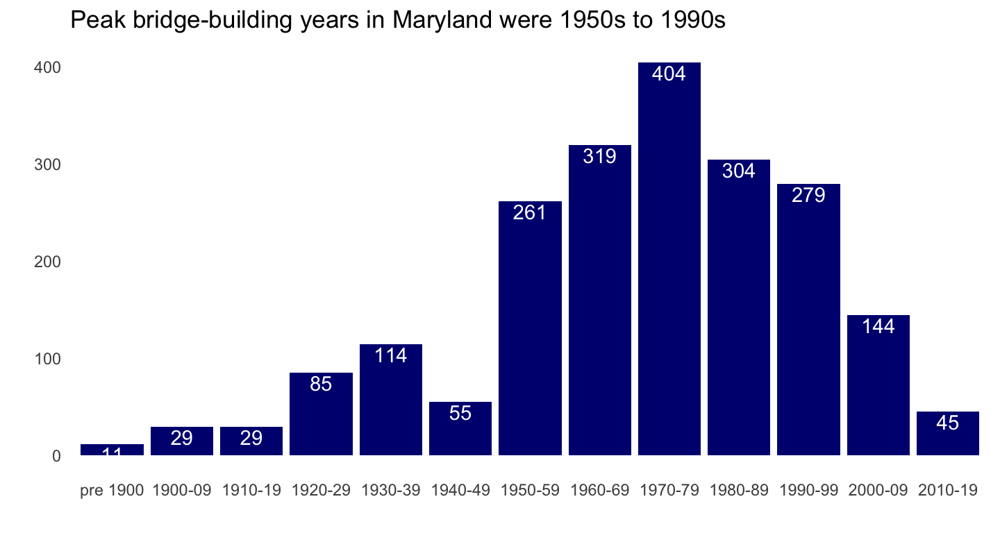
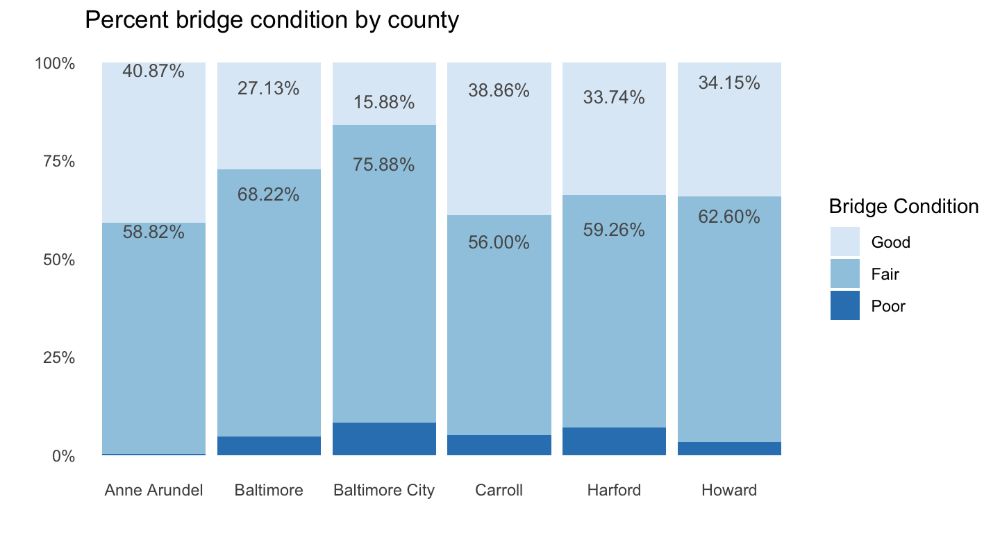
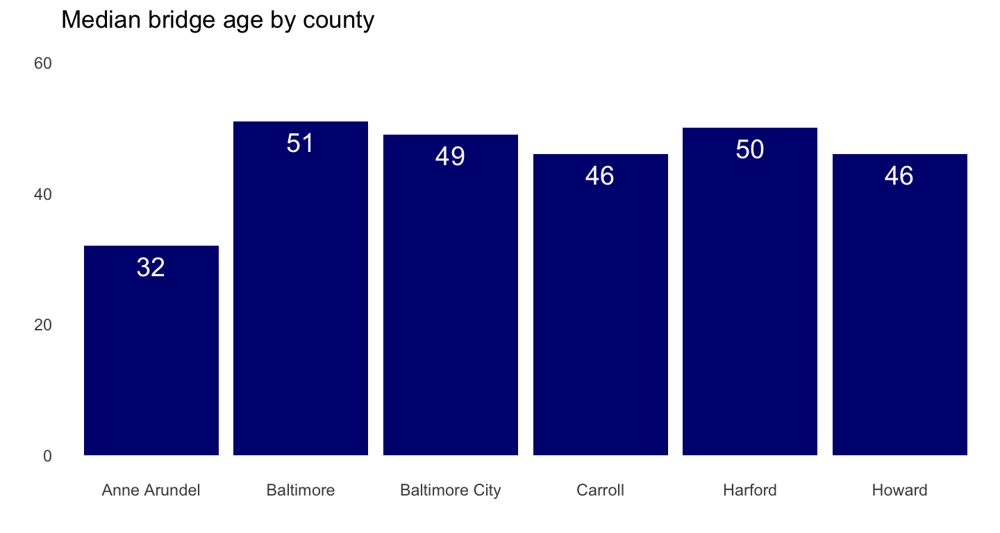
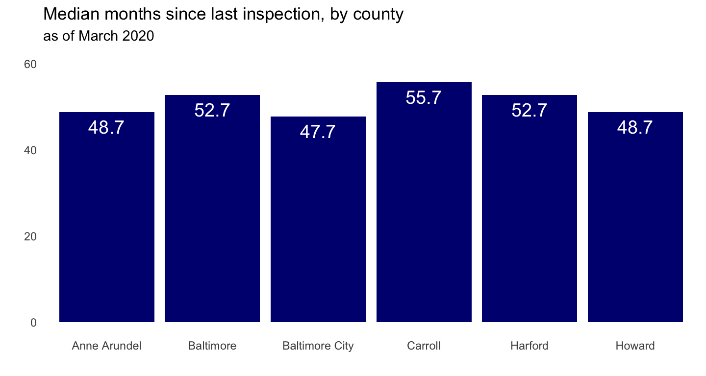
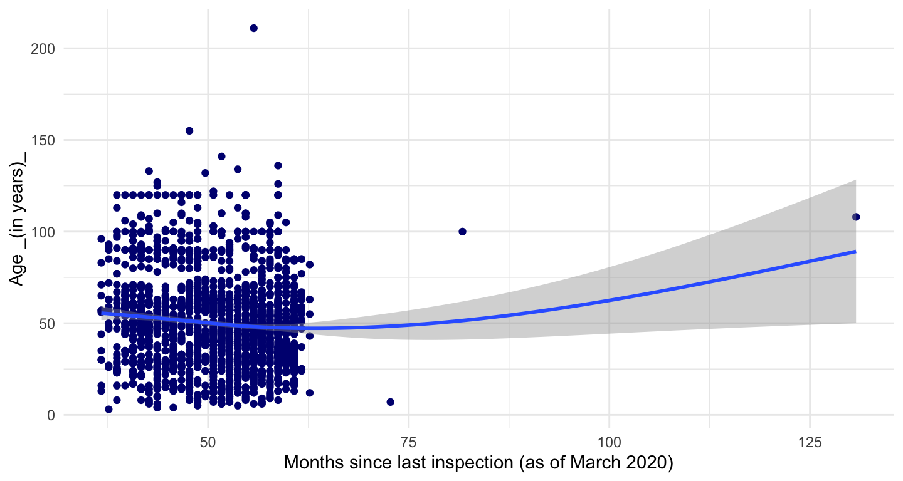
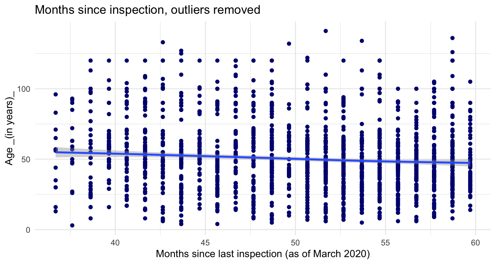
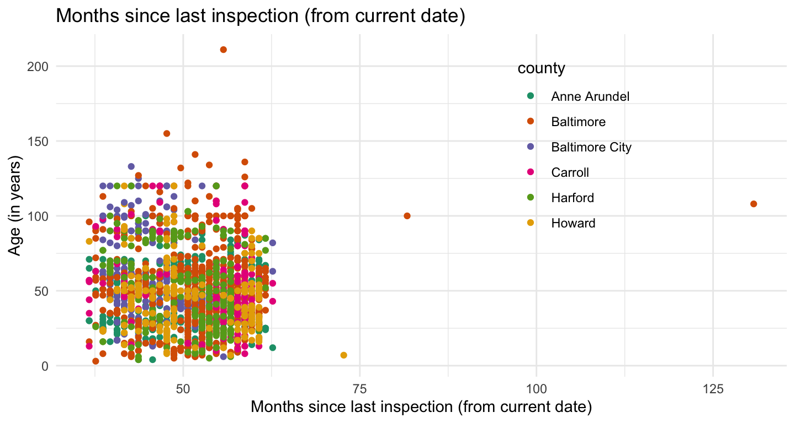
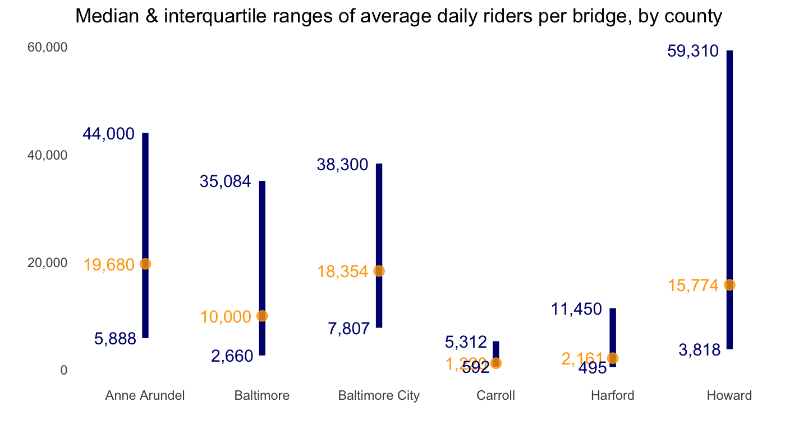
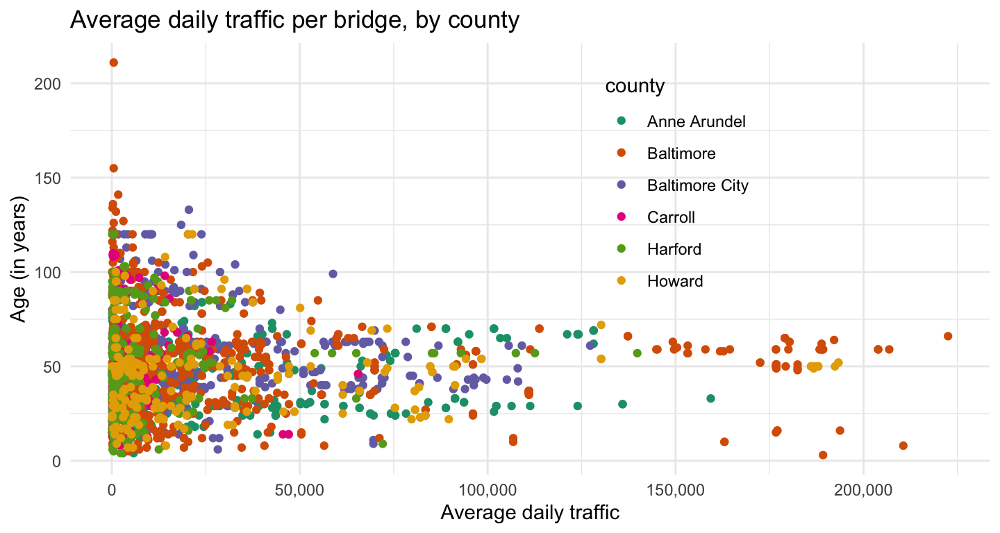

# readin in data, create df for plots
library(tidytuesdayR) # to load tidytuesday data
library(tidyverse) # to do tidyverse things
library(tidylog) # to get a log of what's happening to the data
library(patchwork) # stitch plots together
library(gt) # lets make tables
library(RColorBrewer) # colors!
library(scales) # format chart output
This dataset was posted to the #TidyTuesday repo back in November 2018. I worked on it a bit then, but didn’t properly finish it until March of 2020. With the blog finally set up figured I might as well post it as an entry.
Update for migration from Hugo to Quarto…now that code-fold is native to code chunks, I’ll sometimes use if for long bits of code. Just click the down arrow to show code
First let’s read in the file from the raw data file on github
tt_balt_gh <-
read_csv("https://raw.githubusercontent.com/rfordatascience/tidytuesday/master/data/2018/2018-11-27/baltimore_bridges.csv",
progress = show_progress())Organize and clean the data for analysis
- clean up some date and name issues
- a decade-built field, factored for sorting
- time since last inspection
show data cleaning code
# keeping the comparison date March 21 when I originally did analysis
today <- as.Date(c("2020-03-21"))
#Sys.Date()
today_yr <- as.numeric(format(today, format="%Y"))
tt_mdbrdf <- as.data.frame(tt_balt_gh) %>%
mutate(age = today_yr - yr_built) %>%
# mutate(vehicles_n = as.numeric(str_remove(vehicles, " vehicles")))
## not needed, avg_daily_traffic has same info
mutate(inspection_yr = inspection_yr + 2000) %>%
mutate(county = ifelse(county == "Baltimore city", "Baltimore City", county)) %>%
mutate(county = str_replace(county, " County", "")) %>%
mutate(bridge_condition = factor(bridge_condition, levels = c("Good", "Fair", "Poor"))) %>%
mutate(decade_built = case_when(yr_built <= 1899 ~ "pre 1900",
yr_built >= 1900 & yr_built <1910 ~ "1900-09",
yr_built >= 1910 & yr_built <1920 ~ "1910-19",
yr_built >= 1920 & yr_built <1930 ~ "1920-29",
yr_built >= 1930 & yr_built <1940 ~ "1930-39",
yr_built >= 1940 & yr_built <1950 ~ "1940-49",
yr_built >= 1950 & yr_built <1960 ~ "1950-59",
yr_built >= 1960 & yr_built <1970 ~ "1960-69",
yr_built >= 1970 & yr_built <1980 ~ "1970-79",
yr_built >= 1980 & yr_built <1990 ~ "1980-89",
yr_built >= 1990 & yr_built <2000 ~ "1990-99",
yr_built >= 2000 & yr_built <2010 ~ "2000-09",
TRUE ~ "2010-19")) %>%
mutate(decade_built = factor(decade_built, levels =
c("pre 1900", "1900-09", "1910-19", "1920-29", "1930-39",
"1940-49", "1950-59", "1960-69", "1970-79",
"1980-89", "1990-99", "2000-09", "2010-19"))) %>%
mutate(inspect_mmyy = ISOdate(year = inspection_yr, month = inspection_mo, day = "01")) %>%
mutate(inspect_mmyy = as.Date(inspect_mmyy, "%m/%d/%y")) %>%
mutate(inspect_days = today - inspect_mmyy) %>%
mutate(inspect_daysn = as.numeric(inspect_days)) %>%
mutate(inspect_years = inspect_daysn/ 365.25) %>%
mutate(inspect_months = inspect_daysn / 30.417)The first few charts look at bridges built by decade, the condition of all bridges by county, and how long since last inspection.
tt_mdbrdf %>%
mutate(county = str_replace(county, " County", "")) %>%
count(decade_built) %>%
ggplot(aes(decade_built, n)) +
geom_bar(stat = "identity", fill = "navy") +
geom_text(aes(label = n), color = "white", vjust = 1.2) +
labs(title = "Peak bridge-building years in Maryland were 1950s to 1990s" ,
x = "", y = "") +
theme_minimal() +
theme(panel.grid.major = element_blank(), panel.grid.minor = element_blank())
Baltimore City has the lowest percentage of bridges in good condition, Anne Arundel the most. Baltimore City & Harford County seems to have the largest percentage of bridges in poor condition.
show stacked bar chart code
## percent bridge condition by county
# need to create df object to do subset label call in bar chart
brcondcty <-
tt_mdbrdf %>%
count(county, bridge_condition) %>%
group_by(county) %>%
mutate(pct = n / sum(n)) %>%
ungroup()
ggplot(brcondcty, aes(x = county, y = pct, fill = bridge_condition)) +
geom_bar(stat = "identity") +
geom_text(data = subset(brcondcty, bridge_condition != "Poor"),
aes(label = percent(pct)), position = "stack",
color= "#585858", vjust = 1, size = 3.5) +
scale_y_continuous(label = percent_format()) +
labs(title = "Percent bridge condition by county" ,
x = "", y = "", fill = "Bridge Condition") +
scale_fill_brewer(type = "seq", palette = "Blues") +
theme_minimal() +
theme(panel.grid.major = element_blank(), panel.grid.minor = element_blank())
Given the condition percentages in Baltimore County & City and Harford County, it’s no surprise that their bridges are older than in other counties.
show bar chart code
## median age of bridges by county
tt_mdbrdf %>%
group_by(county) %>%
summarise(medage = median(age)) %>%
ungroup() %>%
ggplot(aes(x = county, y = medage)) +
geom_bar(stat = "identity", fill= "navy") +
geom_text(aes(label = round(medage, digits = 1)),
size = 5, color = "white", vjust = 1.6) +
ylim(0, 60) +
labs(title = "Median bridge age by county" ,
x = "", y = "") +
theme_minimal() +
theme(panel.grid.major = element_blank(), panel.grid.minor = element_blank())
It’s somewhat reassuring then that Baltimore City bridges at least have less time in months since last inspection than do the counties.
show bar chart code
## median months since last inspection by county
tt_mdbrdf %>%
group_by(county) %>%
summarise(medinsp = median(inspect_months)) %>%
ungroup() %>%
ggplot(aes(x = county, y = medinsp)) +
geom_bar(stat = "identity", fill= "navy") +
geom_text(aes(label = round(medinsp, digits = 1)),
size = 5, color = "white", vjust = 1.6) +
ylim(0, 60) +
labs(title = "Median months since last inspection, by county",
subtitle = "as of March 2020",
x = "", y = "") +
theme_minimal() +
theme(panel.grid.major = element_blank(), panel.grid.minor = element_blank())
It might be the outliers pulling the smoothing line straight, but there doesn’t seem to be too much of a relationship between age and time since last inspection.
show scatterplot code
## age by months since last inspection
tt_mdbrdf %>%
ggplot(aes(inspect_months, age)) +
geom_point(color = "navy") +
geom_smooth() +
labs(x = "Months since last inspection (as of March 2020)",
y = "Age _(in years)_") +
theme_minimal()
And in fact, removing the outliers shows a slight relationship; the older bridges do seem to get inspected more frequently. In terms of a better visualization, looking at this again, I wonder if some jittering or another type of plot might have been more visually appealing, givne the clustering of most recent inspections.
# same code as above but with outliers removed
tt_mdbrdf %>%
filter(age <150, inspect_months <60) %>%
ggplot(aes(inspect_months, age)) +
geom_point(color = "navy") +
geom_smooth() +
labs(title = "Months since inspection, outliers removed",
x = "Months since last inspection (as of March 2020)",
y = "Age _(in years)_") +
theme_minimal()
Not sure if scatter-plot with colors by county is best way to go for this idea. Maybe a tree map?
show scatterplot code
# same but colors by county
tt_mdbrdf %>%
ggplot(aes(inspect_months, age, color = county)) +
geom_point() +
scale_color_brewer(palette="Dark2") +
labs(title = "Months since last inspection (from current date)",
x = "Months since last inspection (from current date)",
y = "Age (in years)") +
theme_minimal() +
theme(legend.position = c(.8, .95),
legend.justification = c("right", "top"),
legend.box.just = "right",
legend.margin = margin(6, 6, 6, 6))
Funky distributions here…Anne Arundel & Baltimore City have the highest median daily riders, but Howard County’s upper quartile is way out there.
showing the code here to illustrate how I like to run the mean & interquartiles in the same code as rendering the plot.
# median & interquartiles of daily riders of bridges by county -
tt_mdbrdf %>%
group_by(county) %>%
summarise(medtraf = median(avg_daily_traffic),
lq = quantile(avg_daily_traffic, 0.25),
uq = quantile(avg_daily_traffic, 0.75)) %>%
ungroup() %>%
ggplot(aes(county, medtraf)) +
geom_linerange(aes(ymin = lq, ymax = uq), size = 2, color = "navy") +
geom_point(size = 3, color = "orange", alpha = .8) +
geom_text(aes(label = comma(medtraf, digits = 0)),
size = 4, color = "orange", hjust = 1.2) +
geom_text(aes(y = uq, label = comma(uq, digits = 0)),
size = 4, color = "navy", hjust = 1.2) +
geom_text(aes(y = lq, label = comma(lq, digits = 0)),
size = 4, color = "navy", hjust = 1.2) +
scale_y_continuous(label = comma) +
labs(title = "Median & interquartile ranges of average daily riders per bridge, by county" ,
x = "", y = "") +
theme_minimal() +
theme(panel.grid.major = element_blank(), panel.grid.minor = element_blank())
As with the other scatterplot with colors for county, might need a different way to see relationship between bridge age and daily traffic by county.
show scatterplot code
## age by avg daily riders by county
tt_mdbrdf %>%
ggplot(aes(avg_daily_traffic, age, color = county)) +
geom_point() +
scale_color_brewer(palette="Dark2") +
scale_x_continuous(labels = comma) +
labs(title = "Average daily traffic per bridge, by county" ,
x = "Average daily traffic",
y = "Age (in years)") +
theme_minimal() +
theme(legend.position = c(.75, .95),
legend.justification = c("right", "top"),
legend.box.just = "right",
legend.margin = margin(6, 6, 6, 6))
Cover image for post (CC BY-SA 4.0) from Wikipedia
This post was last updated on 2023-05-14